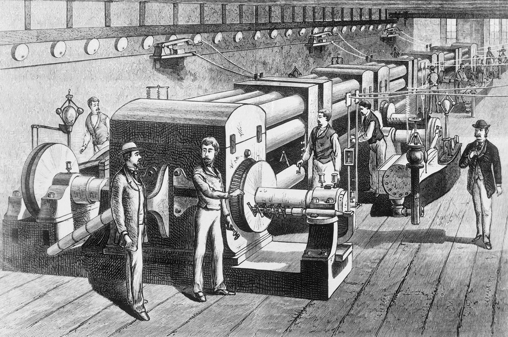
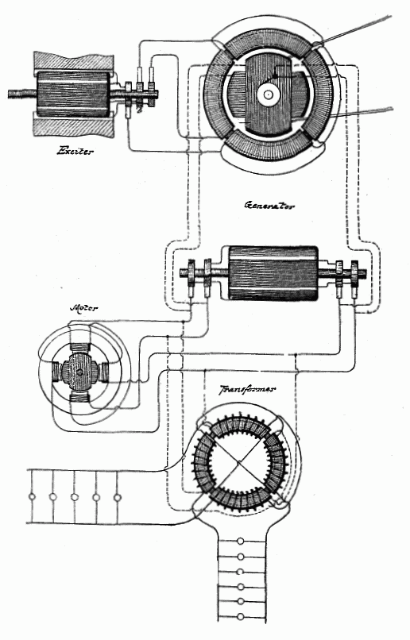
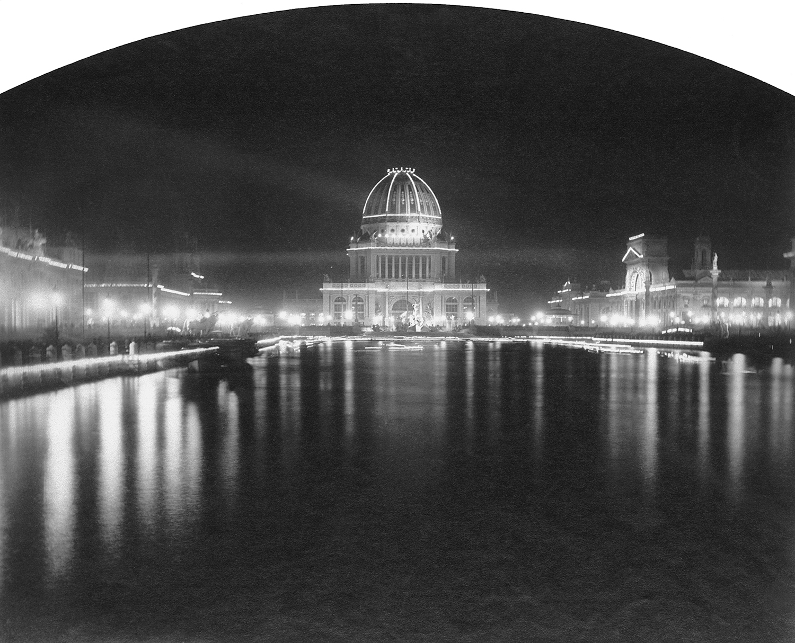
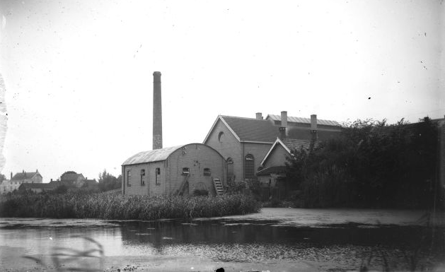
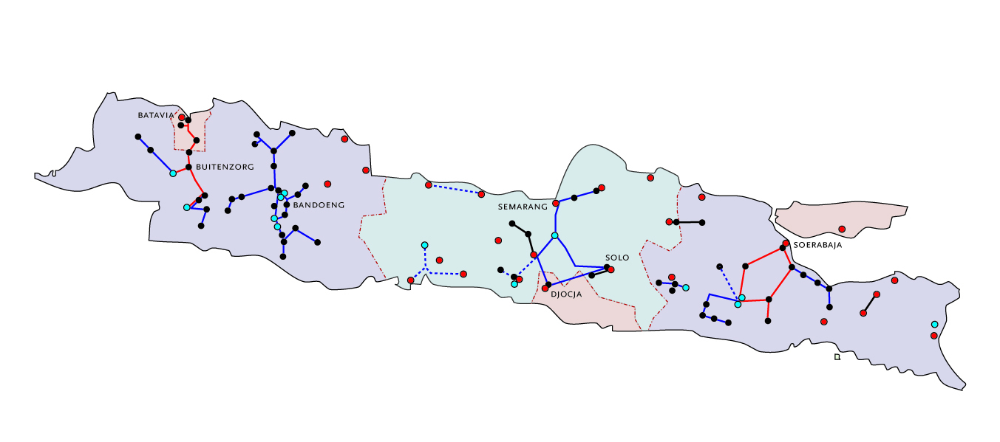

Elektriciteit speelt al sinds meer dan 100 jaar een zeer belangrijke rol in onze moderne samenleving, zeker vanaf het moment dat elektriciteit werd ingezet voor het maken van licht en het verrichten van arbeid. Anno 2011 zijn er veel nieuwe ontwikkelingen die het vak van de elektriciteitsvoorziening alleen maar interessanter maken. Zowel op elektrotechnisch gebied als op maatschappelijk gebied staan de ontwikkelingen niet stil. Dit boek poogt een overzicht te geven van de technische aspecten van de elektriciteitsvoorziening in het verleden, het heden en de nabije toekomst.
De ontwikkelingen die leidden tot de moderne elektriciteitsvoorzieningsystemen van vandaag de dag hebben een lang voortraject, dat begon met de ontdekking van de statische elektriciteit. Al in de oudheid kende de mensheid verschijnselen van statische elektriciteit. Door barnsteen te wrijven met een dierlijke vacht werd het statisch geladen en kon het lichte voorwerpen aantrekken. Elektriciteit heeft zijn naam te danken aan het oude Griekse woord voor barnsteen (Elektron = ηλεκτρον). In 1663 bouwde Otto von Guericke volgens dat principe een elektriseermachine, die het voor het eerst mogelijk maakte elektrische lading op gecontroleerde wijze op te wekken. Dankzij de uitvinding van de Leidse fles, in 1746 door Pieter van Musschenbroek, kon men deze lading ook opslaan. In de zeventiende en achttiende eeuw gingen talloze onderzoekers met de tot dan toe nog onverklaarbare elektriciteit aan de slag. Hun bevindingen leidden tot talloze speculaties en ontdekkingen. Elektrostatische machines gaven echter alleen maar één enkele stroomstoot. Pas met de komst van de batterij (Volta, 1800) kon men een permanente stroom produceren. Het wetenschappelijk onderzoek nam toen een grote vlucht en gaandeweg begonnen ingenieurs bruikbare toepassingen te ontwikkelen. Met de uitvinding van een praktische gloeilamp kwam grootschalige toepassing van elektriciteit binnen bereik van velen.
Vooruitstrevende burgers begonnen hotels, fabrieken, kerken en woonhuizen uit te rusten met gloeilampen die door eigen dynamo’s of batterijen van elektriciteit werden voorzien. Edison zag in 1879 in dat centrale opwekking van elektriciteit een enorme markt zou openen: ‘We will make electricity so cheap that only the rich will burn candles’. Hij moest daarvoor wel eerst een compleet elektriciteitsnetwerk, inclusief dynamo’s, kabels en accessoires zoals fittingen, zekeringen en elektriciteitsmeters ontwikkelen. In 1882 nam hij ’s werelds eerste elektriciteitscentrale in bedrijf die 110 V gelijkspanning leverde aan een paar blokken rond Pearl Street in Manhattan. De 100 V lampen dicht bij de centrale konden in die tijd op een spanning van 110 V werken. Bij transport over meer dan 2,5 km werd het spanningsverlies in de laagspanningslijnen te groot, hetgeen de omvang van het voorzieningsgebied beperkte. Binnen enkele jaren stonden er meer dan honderd gelijkstroomcentrales in Amerika.
In 1884 emigreerde de Kroatische Serviër Nikola Tesla naar Amerika om bij Edison in New York te gaan werken. Tesla nam uit Europa de overtuiging mee dat wisselstroom superieur was aan gelijkstroom. Edison bleef echter vasthouden aan gelijkstroom. In 1888 ging Tesla daarom bij Westinghouse in Pittsburgh werken. Daar ontwikkelde hij een compleet wisselstroomsysteem met transformatoren, inductiemotoren en dynamo’s, zie figuur 1.2. Een van de grote voordelen van wisselstroom ten opzichte van gelijkstroom is dat de spanning met behulp van een transformator naar hogere en naar lagere niveaus omgezet kan worden. Bij een hoge transportspanning is de te transporteren stroom navenant kleiner, waardoor de verliezen in de lijnen beperkt blijven en waardoor de omvang van het voorzieningsgebied groter is dan in het geval van het 110 V gelijkstroomsysteem. In 1890 werd de eerste wisselstroomcentrale in werking gesteld.

Eind jaren ’80 van de 19e eeuw brak de ‘War of Currents’ uit. Edison trachtte zijn belangen in gelijkstroom te beschermen. Hij hamerde vooral op de gevaren van hoge wisselspanning: met openbare experimenten op dieren probeerde hij aan te tonen hoe dodelijk wisselstroom was. Hij zorgde ervoor dat de net uitgevonden elektrische stoel daarom met wisselstroom zou worden uitgerust. Het was een vergeefse strijd, die in 1893 werd beslist. Gewapend met Tesla’s wisselstroomsysteem kreeg Westinghouse de opdracht de Chicago World’s Fair van verlichting te voorzien. Op de feeëriek verlichte tentoonstelling bewonderden 27 miljoen bezoekers de twaalf 1000 pk wisselstroomgeneratoren en Tesla’s meerfase systeem voor wisselstroomopwekking en -distributie.
In Noord-Amerika koos men voor een nominale spanning 110 V omdat in de jaren rond 1880 de koolstoflampen waren ontworpen voor een spanning van 100 V met een tolerantie van +10%. De hogere spanning was nodig voor het spanningsverlies over de laagspanningslijnen en kabels. Om de stromen in het laagspanningsnet te reduceren, koos in 1899 de Berliner Elektrizitäts-Werk (BEW) voor een dubbel zo hoog spanningsniveau van 220 V. Met de uitvinding van de gloeilamp met een metallische gloeidraad, was het mogelijk deze te ontwerpen voor de hogere spanning. De vervangingskosten van apparatuur bij hun klanten waren minder dan de besparing op het netverlies. Door deze keuze was de standaard gezet voor de nominale spanning van 220 V in Duitsland en in Europa.
Ten aanzien van de frequentie was in de begindagen nog geen eenduidigheid. Door de internationale handel in elektrische apparaten was men gedwongen een standaard te accepteren. In Noord-Amerika groeide de voorkeur voor 60 Hz. Het Duitse AEG koos echter voor een frequentie van 50 Hz voor hun eerste grote centrale, vermoedelijk omdat 60 geen voorkeursgetal (uit de reeks 1-2-5) was. Aangezien AEG in die dagen een monopolie had, kon hun standaard verspreid worden over de rest van Europa.
Net als in Amerika waren ook in Nederland de eerste elektriciteitsbedrijven een particulier initiatief. In 1884 begon Kapitein De Khotinsky met het verkopen van elektriciteit in Rotterdam. Hij laadde overdag open accu’s op in Rotterdam-Zuid, die hij ’s avonds naar de overkant liet varen om daar kantoorgebouwen van elektriciteit te voorzien. Het systeem was niet perfect: bij zwaar weer klotste het zwavelzuur tijdens het overvaren over de rand van de accu’s. Omdat de gemeente zijn plannen om centrales in de stad te bouwen tegenwerkte, vertrok de kapitein in 1888 naar Duitsland.
De eerste Nederlandse openbare centrale werd in 1886 door Willem B. Smit in Kinderdijk gebouwd met een stoommachine van 80 pk en twee gelijkstroomdynamo's van elk 7,5 kW. Tot 10 uur ’s avonds leverde hij elektriciteit voor 300 ‘lichtpunten’ bij bedrijven en huishoudens. Al snel werden overal in het land elektriciteitsbedrijven opgericht. Gemeenten reageerden vaak terughoudend, omdat zij bang waren voor het voortbestaan van hun gasfabrieken. Toen ze inzagen dat de opkomst van elektriciteit niet te stuiten was, besloten grotere steden vanaf 1900 zelf de opwekking en distributie van elektriciteit ter hand te nemen. In twaalf jaar groeide het totaal opgesteld vermogen in Nederland van 3 naar 70 MW.
Al in 1890 regelde de Nederlands-Indische overheid met een zeer vooruitstrevende ‘ordonnantie’ de elektriciteitsvoorziening. Die begon daarop ook in Nederlands-Indië als particulier initiatief. Anders dan in het moederland bleef dat ook zo. Dankzij haar ordonnantie was de overheid in staat leiding te geven aan de particuliere ondernemingen.
De distributiespanning was over het algemeen 220/127 V. De spanning was lager dan in Nederland, onder meer omdat ‘de inlandsche bevolking blootsvoets loopt’.
Al was er in 1938 al in veel steden elektriciteit voorhanden, het aantal aansluitingen was veel lager dan in Nederland. Er waren bijvoorbeeld vele kilometerslange 30 kV-lijnen, waarlangs slechts zo’n 60 kW werd vervoerd.
Op Curaçao werd al in 1889 een concessie verleend aan de Amerikaan L.B. Smith. De concessie kwam al snel in handen van ‘Maduro & Sons’ en werd later overgedragen aan de Nederlandsch-Indische Gas Maatschappij. Deze maatschappij begon in 1930 ook in Paramaribo een elektriciteitsbedrijf.

Rond 1920 had Nederland zo’n 550 elektriciteitsbedrijven, waarvan er 480 uitsluitend distributiebedrijven waren. Amsterdam was in die tijd de meest geëlektrificeerde stad ter wereld en ook in de meeste andere Nederlandse steden was de elektriciteitsvoorziening goed in orde. Rond de steden werden ook omliggende plaatsen op de lokale netten aangesloten, maar geen van de bedrijven voelde er voor het platteland te elektrificeren. Volgens de overheid moesten echter ook ‘onrendabele gebieden’ worden aangesloten. Per Koninklijk Besluit werden ‘Provinciale Electriciteits-Maatschappijen’ opgericht die hun hele werkgebied van elektriciteit moesten gaan voorzien. Alleen Drenthe en Zuid-Holland kregen geen provinciaal bedrijf. Drenthe werd verdeeld tussen Groningen en Overijssel (IJsselcentrale) terwijl in Zuid-Holland de elektrificatie vanuit de grote steden al zo ver gevorderd was, dat men besloot dat niet meer te veranderen. De bedrijven in Friesland, Noord-Holland en Groningen waren pure overheidsbedrijven, terwijl die van Utrecht, Gelderland, Noord-Brabant, Zeeland en Limburg N.V.’s waren, met de provincies als aandeelhouders. Als gevolg hiervan waren de laatste – tot het eind van de twintigste eeuw aan toe – in staat veel daadkrachtiger op te treden. In deze periode ontstonden ook de ‘Arnhemse Instellingen’, organisaties als KEMA, VDEN en VEEN, waarin de elektriciteitsbedrijven samenwerkten.
Direct na de tweede wereldoorlog kende ons land 10 provinciale en 69 gemeentelijke en andere distributiebedrijven. Vanuit hun historie bestond het distributienet uit een grote diversiteit aan boven- en ondergrondse verbindingen. Ook dunne middenspanningskabels waren heel gewoon. De transformatoren, aangeschaft tussen de eerste en tweede wereldoorlog, waren in alle soorten en maten aanwezig. Deze toestand was de aanzet tot de normalisatie in het elektriciteitsvoorzieningsysteem. Ook de keuze voor genormaliseerde spanningsniveaus voor de diverse functies is in die tijd gemaakt.
In de provincies werd flink geïnvesteerd. In Brabant waren al in 1922 twee ringvormige 50 kV-netten voltooid, en begon men aan een 150 kV-lijn. In het noorden koos men voor 60 kV-netten. Groningen en Friesland koppelden in 1929 hun netten aan elkaar om hun centrales efficiënter te kunnen inzetten. In Limburg werd een lijn aangelegd die de centrales van de mijnen met het noorden verbond.
Al snel werd gesproken over het aanleggen van een landelijk koppelnet. KEMA-directeur Van Staveren boog zich over dit idee. Samen met mededirecteur De Zoeten was hij na de Slag om Arnhem geëvacueerd en in Eerbeek terechtgekomen. Tijdens hun evacuatie ontwikkelden zij een alomvattend plan voor de naoorlogse structuur van de Nederlandse elektriciteitsvoorziening. Dit leidde in 1949 tot de oprichting van de N.V. Samenwerkende Electriciteits-Productiebedrijven (SEP) met beide heren als directeur.
In 1950 waren de centrales van Limburg, Noord-Brabant en Zuid- en Noord-Holland met elkaar verbonden, en via Lutterade (bij Geleen) was uitwisseling van elektrische energie met het buitenland mogelijk. Drie jaar later waren alle centrales van Nederland met elkaar verbonden. De centrale besturing vanuit Arnhem kwam echter maar moeizaam van de grond. Het duurde 28 jaar voor – dankzij het programma Landelijke Economische Optimalisatie (LEO) van de elektriciteitsproductiebedrijven – het starten en stoppen van de in Nederland opgestelde centrales daadwerkelijk vanuit Arnhem werd gecoördineerd.
Vanaf de jaren vijftig nam, met de welvaart ook het elektriciteitsgebruik snel toe. In 1960 was de landelijke productie 16,5 TWh. Tien jaar later was het 41 TWh. Het jaarverbruik per inwoner steeg van 1300 naar 2900 kWh. Een forse stijging, al was in de VS het verbruik in 1970 maar liefst 7400 kWh per inwoner.
In heel Nederland werd hard gewerkt om die groei te verwerken. Veel 50 kV-netten werden door 150 kV-netten vervangen en het noorden ruimde de 60 kV-netten op. In 1962 had Nederland een noordelijke ring van 110 kV en een zuidelijke van 150 kV. Deze netten zouden op termijn nog niet in staat zijn de groei te verwerken. Daarom werd besloten een landelijk 380 kV koppelnet aan te leggen. In 1970 werd het eerste deel van dit net door Prins Claus in werking gesteld. Niet alle elektriciteitsbedrijven werkten even enthousiast mee aan de realisering van het koppelnet. Hierdoor volgde het net bijvoorbeeld niet het ideale tracé, maar liep het vooral langs de randen van de verzorgingsgebieden. En al na enkele jaren stokte de bouw. Toen de westelijke helft van de ring was voltooid, zag een deel van de bedrijven niet in waarom ze zouden moeten bijdragen aan het voltooien van de ring. Ze investeerden liever in aansluitingen van hun centrales op de Maasvlakte, Borssele en IJmuiden. Pas na 22 jaar (in 1991) werd de ring gesloten.

Langzaam aan begon de maatschappij zich meer en meer met de elektriciteitsvoorziening te bemoeien. Burgers verzetten zich tegen kernenergie en tegen horizonvervuiling door hoogspanningsmasten. De politiek werd door de industrie onder druk gezet de elektriciteitstarieven omlaag te brengen. De historisch gegroeide structuur van de Nederlandse Elektriciteitsvoorziening paste steeds minder bij de maatschappelijke ontwikkelingen. De overheid besloot tot een totale reorganisatie van de elektriciteitssector. Onder druk van de regering werden rond 1986 de productiebedrijven samengevoegd tot vier zelfstandige grote bedrijven. Voor de distributiesector had men vergelijkbare plannen. De sector kreeg tot 1988 de tijd om daarvoor zelf met voorstellen te komen. Oud-burgemeester van Leeuwarden, Brandsma, werd ingehuurd om een en ander in kaart te brengen. Dit leidde respectievelijk tot de Inventarisatiecommissie Brandsma, de Stuurgroep Brandsma en de Begeleidingscommissie Reorganisatie Energiesector Brandsma. Deze laatste commissie stelde voor het aantal distributiebedrijven drastisch terug te brengen.

De nieuwe structuur kwam geleidelijk tot stand. In eerste instantie gingen naburige bedrijven nauwer samenwerken: EGD in Groningen en IJsselmij in Overijssel gingen samen in EDON. In het noorden en oosten ontstonden ook de twee kleinere combinaties Rendo en Cogas. PGEM nam alle zelfstandige Gelderse bedrijven over. Op dezelfde manier gingen de meeste plaatselijke Brabantse bedrijven op in PNEM, en de Limburgse in PLEM (later MEGA Limburg). Rond 1995 fuseerden PGEM en PEB tot Nuon. In Zuid-Holland gingen de grootste bedrijven op in Eneco. Het fuseren en reorganiseren hield nog niet op. In Noord-Holland ging de al bestaande samenwerking tussen diverse gemeentebedrijven en de PEN over in ENW.
In 1999 begon een tweede ronde van fusies: eerst sloten ENW en Rijnland zich aan bij Nuon. De bedrijven EDON, PNEM en MEGA Limburg en het tot dan toe zelfstandige Heerlen en Leeuwarden gingen samen verder als Essent. De overgebleven Zuid-Hollandse en Utrechtse bedrijven, Zuid-Kennemerland en Weert gingen op in Eneco.
Met het verdwijnen van de oude elektriciteitsbedrijven kwam ook een eind aan de bestaande overleginfrastructuur: SEP, VEEN, VDEN en GKN werden opgedoekt en de KEMA werd verzelfstandigd.
De reorganisatie van de elektriciteitssector kreeg, mede door Europese regelgeving, een nieuwe component: liberalisering. In 1998 werd de Derde Elektriciteitswet aangenomen. In een aantal stappen werd de markt vrijgemaakt: eerst voor grote bedrijven, vervolgens voor kleine bedrijven en tenslotte (2004) voor particulieren. Dankzij het nationale en Europese koppelnet (oorspronkelijk aangelegd voor bedrijfszekerheid) kan elektriciteit overal vandaan komen. Buitenlandse levering heeft dan ook de forse groei van het Nederlandse elektriciteitsverbruik van die jaren mogelijk gemaakt, zonder dat het in Nederland opgestelde productievermogen evenredig toenam.
De overheid was van mening dat met het oog op het bevorderen van de eerlijke concurrentie en het behoud van de kwaliteit van de infrastructuur de netten niet in handen mochten blijven van de partijen die op commerciële basis in elektrische energie handelen. Dit leidde tot de vooralsnog laatste stap in de reorganisatie van de elektriciteitssector: de Wet Onafhankelijk Netbeheer in 2006, de zogenaamde Splitsingswet. Beheerders van de netten moesten concurrerende aanbieders van energie toelaten en onafhankelijk zijn van de energieleveranciers. De Splitsingswet moest voorkomen dat er te weinig wordt geïnvesteerd in de energienetten als gevolg van commerciële risico’s die leveranciers van energie nemen. De energiebedrijven werden volgens de Splitsingswet opgedeeld in commerciële productie- en leveringsbedrijven (PLB’s) en in netwerkbedrijven (NWB’s) die de netten met spanningen tot 110 kV in handen hebben. De netwerkbedrijven waren eigendom van provincies en gemeenten en zullen in overheidshanden blijven. De Landelijk Netwerk Beheerder (LNB) TenneT kreeg de verantwoordelijkheid voor het landelijk transportnet van 110 kV en hoger. Anno 2011 zijn alle netwerkbedrijven verzelfstandigd. Met de voltooiing van de reorganisaties is de sector voorbereid voor de toekomst.
De verwachting is dat de groei van het elektriciteitsverbruik voorlopig gewoon doorgaat, waarbij het toegenomen vermogen al dan niet duurzaam wordt opgewekt. Producenten in binnen- en buitenland zullen graag aan de vraag willen voldoen. De Europese transportnetten zullen moeten worden aangepast aan de grote vermogenstransporten die een gevolg zijn van de grotere transportvolumes. Door de bouw van enkele grote centrales in Nederland wordt ons land een netto exporteur.
Voor de distributienetten is het garanderen van de leverbetrouwbaarheid bij de inpassing van duurzame energie en decentrale opwekking de belangrijkste uitdaging. Ontwikkelingen op het gebied van warmtepompen en elektrisch rijden stellen zware eisen aan de distributienetten, waardoor investeringen noodzakelijk blijven. Mede door de ontwikkelingen op het gebied van de ‘intelligente netten’ verwacht men dat de komende decennia ingrijpende veranderingen in de distributienetten zullen plaatsvinden. Daarom bestaat er een groeiende interesse naar studies in deze netten.